| テスト理論 |
| テスト理論 |
2つの得点がペアで与えられているとき、それぞれの平均からの偏差をかけ合わせたものの平均を共分散という。 ここでは、記号で表す。
| 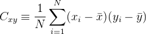 | (5) |
共分散は得点同士の相関関係の強さを反映した指標であり、次に述べる相関係数は共分散を定数倍したものである。
Figure 2 は、共分散の成り立ちを示した図である。 共分散は、図中の斜線が引かれた符号つきの面積の平均である。 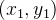や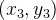のように、面積が正になる領域に得点がたくさんあれば、共分散は正で大きい値になる。 また、このような場合は「 の得点が高い人ほど
の得点が高い人ほど の得点も高い」という正の相関関係が成り立つ。 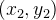や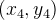と同じ領域に得点がたくさんある場合は、負の相関関係が成り立つ場合であり、共分散の値は負の方向に大きくなる。
の得点も高い」という正の相関関係が成り立つ。 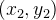や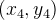と同じ領域に得点がたくさんある場合は、負の相関関係が成り立つ場合であり、共分散の値は負の方向に大きくなる。
すべての について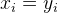であれば、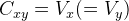である。
について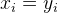であれば、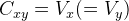である。
また、合成変数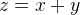について、
| 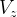 | 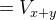 | (6) | ||
 |
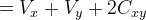 | (7) |
が成り立つ。
| 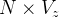 | 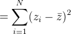 | (8) | ||
|
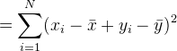 | (9) | ||
|
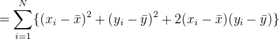 | (10) | ||
|
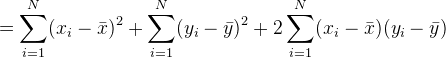 | (11) | ||
|
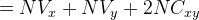 | (12) |
[証明終わり]
共分散と標準偏差を用いて、相関係数を以下のように定義する。
| 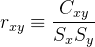 | (13) |
このとき、
| 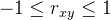 | (14) |
が常に成り立つ。
今、2つのベクトル
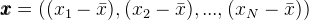
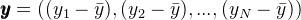
を考える。このとき、 と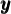の内積は、
と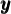の内積は、 をベクトル間の角度として
をベクトル間の角度として
| 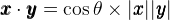 | (15) |
であるから、
| 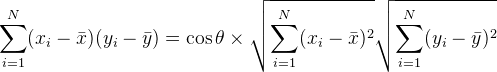 | (16) |
となる。従って、
| 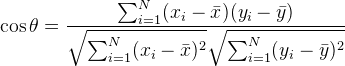 | (17) |
であるから、右辺の分母分子に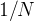をかければ
| 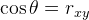 | (18) |
である。よって、である。[証明終わり]
相関係数の値が0から離れているほど、2つの変数は相関関係が強いという。 逆に、相関係数の値が0に近いほど、2つの変数は相関関係が弱いという。 また、相関係数の値が正であれば、相関関係は正、相関係数の値が負であれば相関関係は負であるという。
Figure 3は、いくつかの相関係数を示すデータを散布図で表したものである。 相関係数の値が0から離れるにつれて散布図は直線に近くなる。 また、相関係数の正負は散布図の傾きの正負と対応している。
相関係数は、このように変数間の直線的な相関関係を記述するのに便利な指標である。
| テスト理論 |